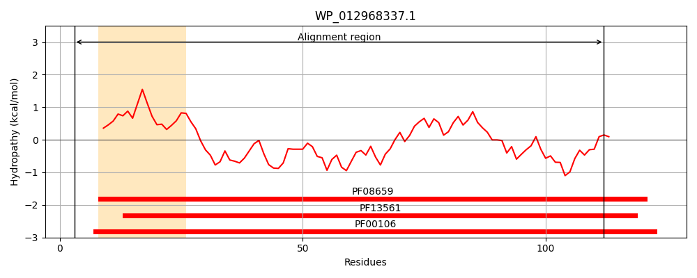
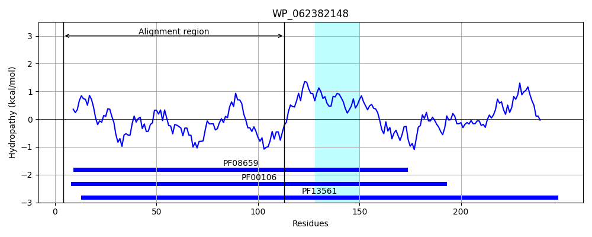
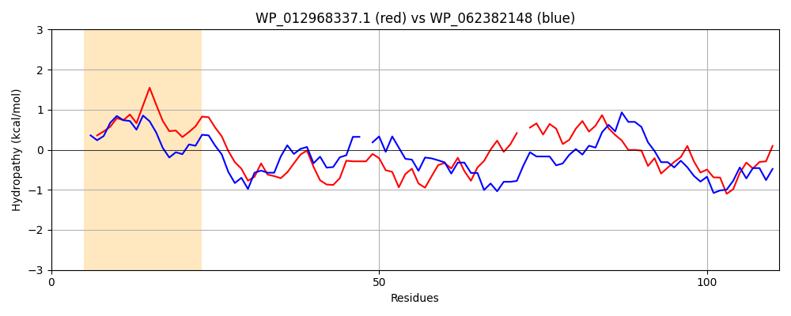

Hit Accession: WP_062382148
Hit TCID: 1.A.115.1.5
Hit Description: gnl|BL_ORD_ID|21287 gnl|TC-DB|WP_062382148.1|1.A.115.1.5 SDR family oxidoreductase [Pseudomonas abietaniphila]
Mach Len: 111
e:0.000000
Query TMS Count : 1
Hit TMS Count: 1
TMS-Overlap Score: 0.000000
Predicted Substrates:None
BLAST Alignment:
| Protein Hydropathy Plots: | |
|---|---|
|  |  |
Pairwise Alignment-Hydropathy Plot: | |
|  | |